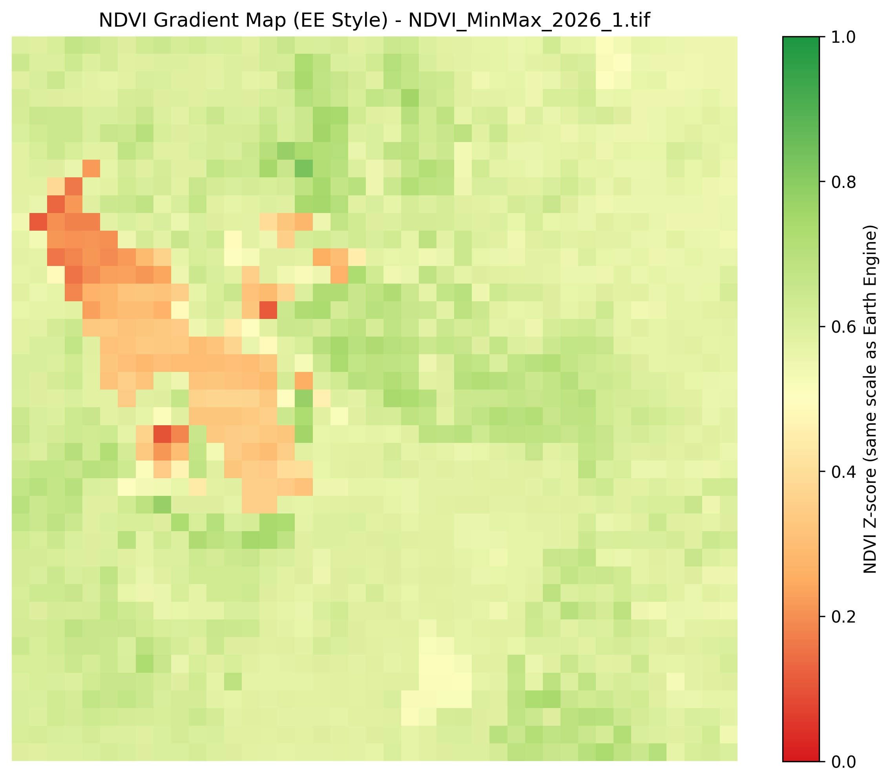

Data · Reports
Monthly NDVI Reports
Easy to understand reports of how vegetation changes throughout the Wasatch
Easy to understand reports of how vegetation changes throughout the Wasatch
Read this to understand how we make our maps and how to read them.


